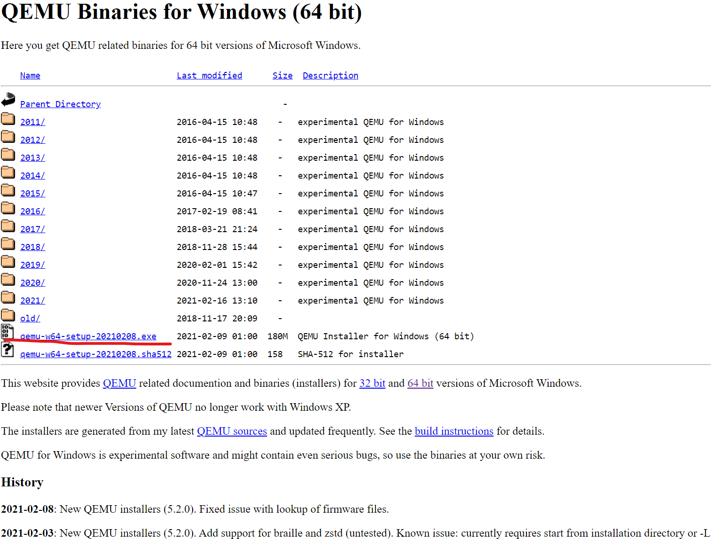
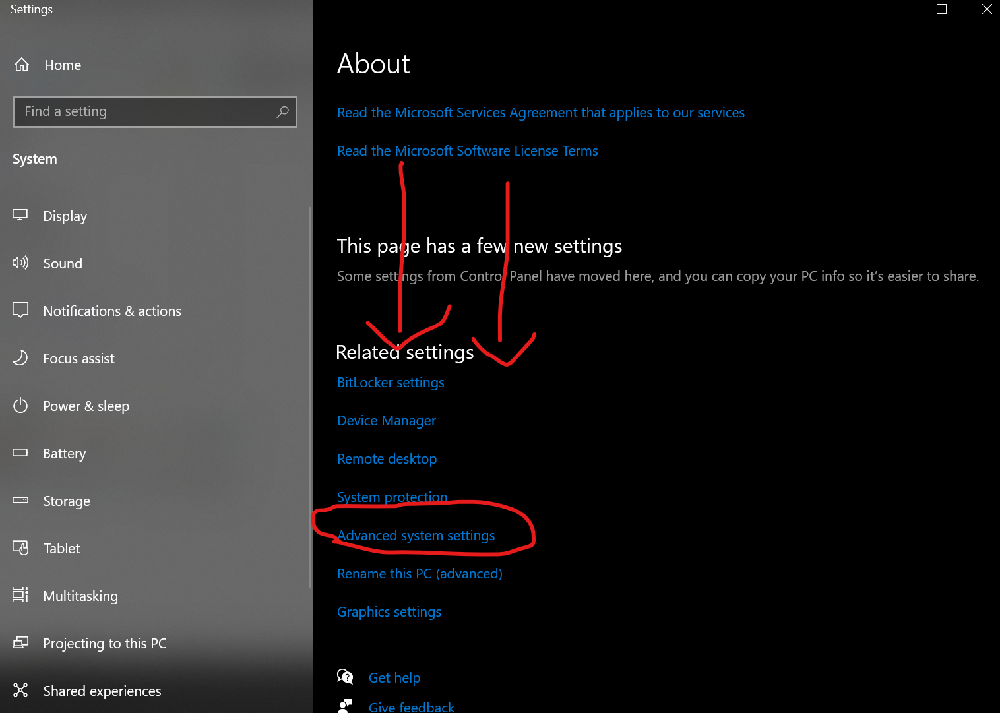
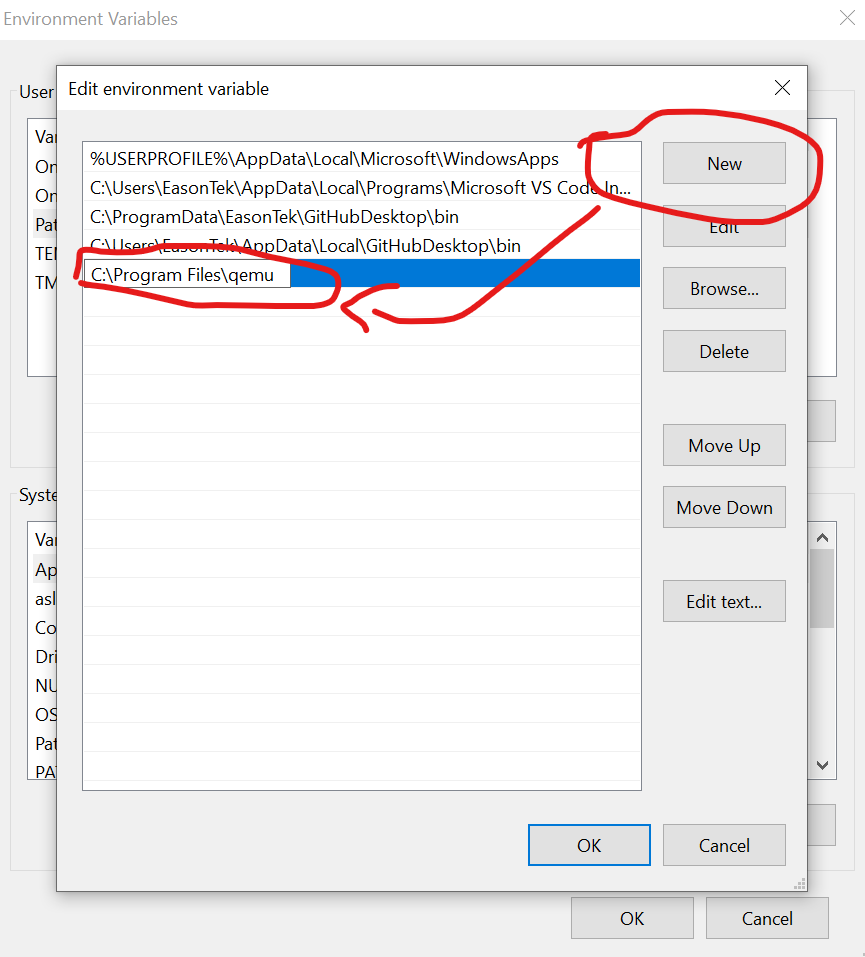

QEMU-PPC Emulation on Windows 10
1. Get the installer at qemu.weilnetz.de/w64

2. Run the Installer.
3. Set environment variables.
A: open File explorer and right click on This PC
B: Select properties
C: Scroll and Select Advanced System Settings

D: Click Environment Variables
E: Click PATH and edit.
F: Click New and input C:\Program Files\qemu into the field.
 G: Click OK and then OK again.
H: Close Settings and the popups.
4: VM Setup
A: Open Powershell and type mkdir puma && cd puma && qemu-img create - f raw -o size=<2 to 8>G puma.img && notepad qemu.cmd
B: Inside the document, choose Create the file or similar if there is a popup, and input the following: qemu-system-ppc -m 1536 -hda puma.img -cdrom puma.iso -boot d -net nic -net user -cpu G4
And save. DO NOT CLOSE POWERHELL
5: Locate ISO image.
A: go to 7-zip.org and download and install 7-zip.
B: Go to https://winworldpc.com/download/3dc3a60a-2c18-c39a-11c3- a4e284a2c3a5 and select a mirror.
C: Download the file, locate the downloaded file after completion and decompress. Move the ISO image to the desktop and rename it puma.iso
D: Get your powershell windows and type mv ~\Desktop\puma.iso ~\puma\ puma.iso and hit return.
6: Install
A: in the powershell window, type .\qemu.cmd and hit return.
B: After Mac OS boots click the emulator window and select Installer and choose Open Disk Utillity.
C: Click <Something>.00 GB QEMU and click erase
D: Choose a name for the volume and choose Mac OS Extended in the Volume type selection box. Mac HD is a good name.
E: Wait
F: Close disk utillity and install with the installer’s instructions.
H: When the installer finnishes, quit qemu and in the powershell window type notepad qemu.cmd. Change -boot d to -boot c and delete -cdrom puma.iso and save.
QUIT POWERSHELL
7: Boot
To boot again after the installation, reopen powershell and type cd ~\puma && .\ qemu.cmd.
DONE!!!!